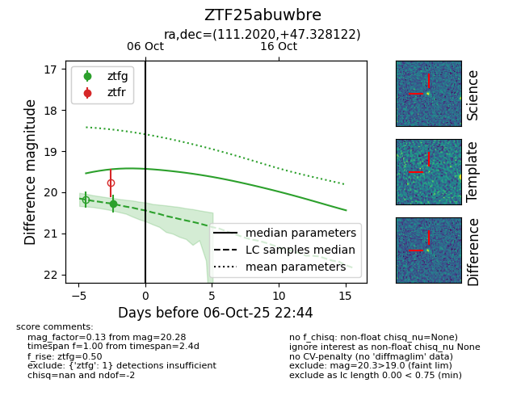
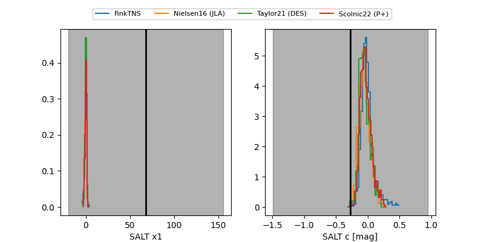

FINK: ZTF25abuwbre
Lasair: ZTF25abuwbre
ALeRCE: ZTF25abuwbre
ZTF25abuwbre (ztf,fink)
equatorial (ra, dec) = (111.2020,+47.32812)
galactic (l, b) = (170.6649,+25.01047)


last ztfg=20.28
1 ztfg detections